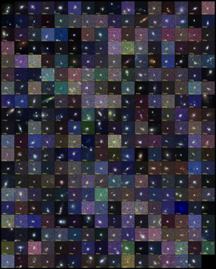
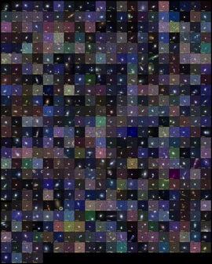

| About SDSS |
| Data Access |
| Confirmed SNe |
| Stripe82 Database |
| Image Access |
| Light Curves |
| Search |
| Contact Helpdesk |
|
The SDSS Supernova Survey was one of three components (along with the Legacy and SEGUE surveys) of SDSS-II, a 3-year extension of the original SDSS that operated from July 2005 to July 2008. The Supernova Survey was a time-domain survey, involving repeat imaging of the same region of sky every other night, weather permitting. The primary scientific motivation was to detect and measure light curves for several hundred supernovae through repeat scans of the SDSS Southern equatorial stripe 82 (about 2.5° wide by ~120° long). Over the course of three 3-month campaigns (Sept-Nov. 2005-7), SDSS-II SN discovered and measured multi-band lightcurves for ~500 spectroscopically confirmed Type Ia supernovae in the redshift range z=0.05-0.4. In addition, we harvested a few hundred light curves for SNe Ia that we did not have the opportunity to spectroscopically confirm, but for which we are measuring host-galaxy redshifts after the fact. The survey also discovered about 80 spectroscopically confirmed core-collapse supernovae (supernova types Ib/c and II). All identified SN candidates were made publicly available instantly via the web and via VOEventNet. All confirmed and likely SNe were announced rapidly in Central Bureau for Electronic Telegrams circulars. The SDSS supernova sample, with excellent photometric calibration, will provide new constraints upon dark energy and insights into the systematics of SNe Ia as calibrated standard candles and cosmological distance indicators. It complements recent surveys that have targeted both lower and higher redshift regimes. The collaboration carried out rapid spectroscopic follow-up on other telescopes for the vast majority of high-quality SN Ia candidates, with the aim of confirming SN type and determining host galaxy redshift. Spectroscopic follow-up telescopes included the Hobby-Eberly Telescope, the ARC 3.5-meter, the New Technology Telescope, Nordic Optical Telescope, the Hiltner 2.4-meter at MDM, Subaru, the Kitt Peak National Observatory 4-meter, the Keck 10-meter, the William Herschel Telescope, Magellan, and the Multiple Mirror Telescope. In addition, a number of these objects were followed with near IR photometry by the Carnegie Supernova Project and by the Very Large Telescope. For more detailed information about the SDSS-II SN Survey, see Frieman, et al., Astronomical Journal, vol. 135, p. 338 (2008) and Sako, et al., Astronomical Journal, vol. 135, p. 348 (2008).
|
| Image Gallery | ||


|
{kind=link}
{kind=link}